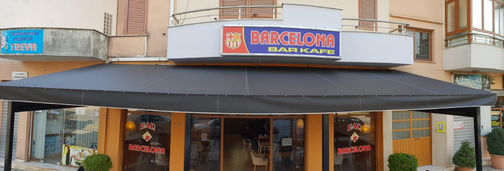

Home
Tenda
Çadra
This buisness was made by Artan Bilali on 1991, in Shkoder. It firstly was for fixing and making new interiors of cars, but then went on to be for Tendas and Çadras. Today its been going for 31 years strong.
